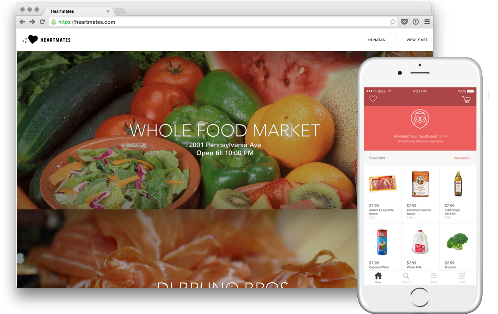

Through my career at Penn, I collaborated with hospitals to build a range of products - medical devices to grocery shopping app. I defined metrics that measure physical and psychological aspects of users.
Here are some examples.
One of the biggest causes and perpetuators of cardiovascular disease in the US is having a poor diet. To try and help this issue, healthcare providers often give their patients advice on healthy eating habits they can utilize in order to reduce their risk of further complications. Some of these eating habits include things as simple reducing a patient’s consumption of sodium, saturated fats, and cholesterol as well as various well known diets that can help as well. Unfortunately, not all of the dietary recommendations that can help a patient are as simple as this though and sometimes a healthcare provider may want to give their patient more specific advice. This is why we built HeartMates. HeartMates provides a medium for users to create their grocery list and have that list analyzed using FoodEssentials analytics using patient specific criteria. To use this app, we set up a patient profile in the back end and so when the user creates their shopping list and navigate to checkout we immediately analyze their list and return to them a number from -100 to 100 indicating how recommended the product is for them. On top of this we have utilized the PostMates API so that after reviewing this list, users can have their groceries sent to a courier and delivered to their home within an hour. We are very excited for the future of our app and hope you enjoy our demo!

Overall responsibility for building new Skylight app for web and mobile platform, and creating out-of-the-box reports that inform the success of the product.
Overall responsibility for building new Skylight app for web and mobile platform, and creating out-of-the-box reports that inform the success of the product.